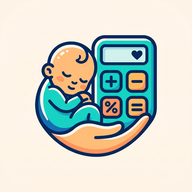

עקומות NICE לפגים (NHS, בריטניה)
בחרו שבוע לידה. הקו התחתון הוא סף הפוטותרפיה, והקו העליון הוא סף חילוף הדם, במיקרומול/ל', לפי ימים מהלידה. כדי להמיר ל-mg/dL מחלקים ב-17.1.

בחרו שבוע לידה. הקו התחתון הוא סף הפוטותרפיה, והקו העליון הוא סף חילוף הדם, במיקרומול/ל', לפי ימים מהלידה. כדי להמיר ל-mg/dL מחלקים ב-17.1.